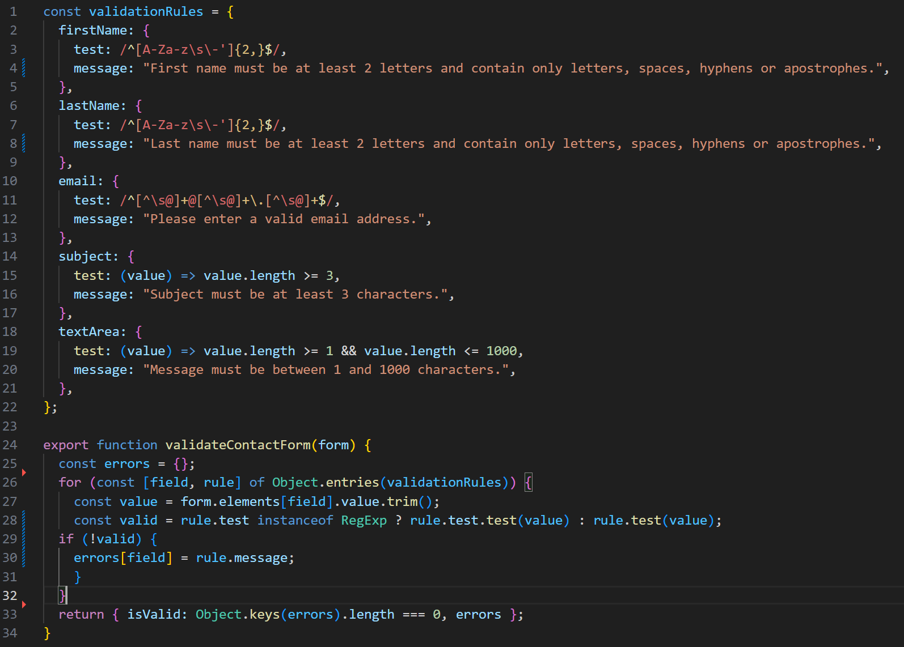

regex form validation
javaScript

verifies if contact form user input matches specific valid patterns: if form is completed correctly, user is notifed of successful submission; if there are errors, an inline warning message appears.
responsive service navigation
sass


dynamic, themed navigation styles generated per service via Sass loop. @each iterates service→colour map to emit .nav-service styles, switching backgrounds/text on hover/focus, drawing downward “arrow”, revealing full‑width dropdown. uses custom media‑query mixin to keep breakpoints DRY; bar height and dropdown/container widths adjust cleanly at 992px and 1260px.
layout-related tweaks
javaScript

layout.js handles layout-related tweaks: it keeps the assignment panel’s height in sync with the preview panel on wide screens and throttles that work with requestAnimationFrame. It also updates toast positioning during resize/scroll events by coordinating with the shared DOM/state utilities.